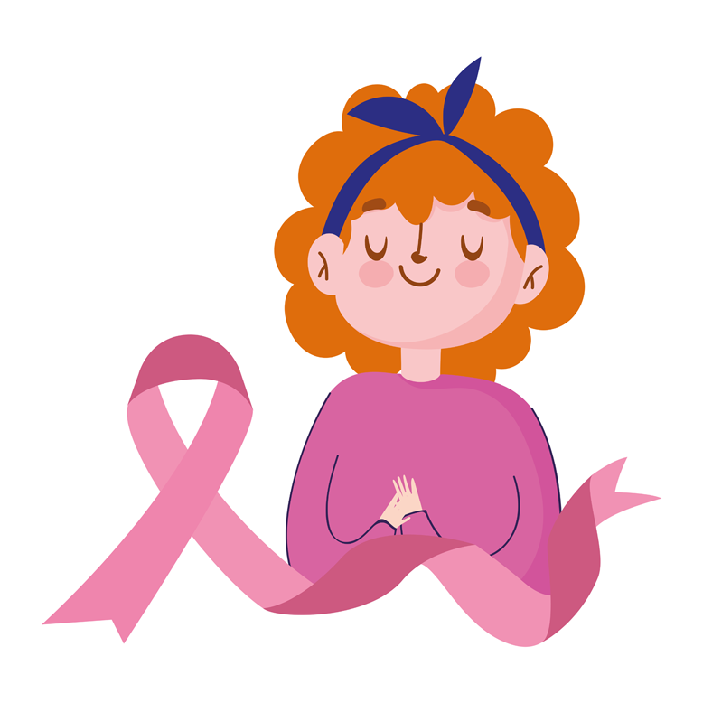

Conheceça a nossa História
Atenção !
Este site foi criado para praticar conhecimentos aprendidos durante um curso de desenvolvimento web , mas todo o conteúdo aqui utilizado é real e serve para informar e coincientizar a todos.
Informe-se e compartilhe essas informações elas podem salvar vidas !
